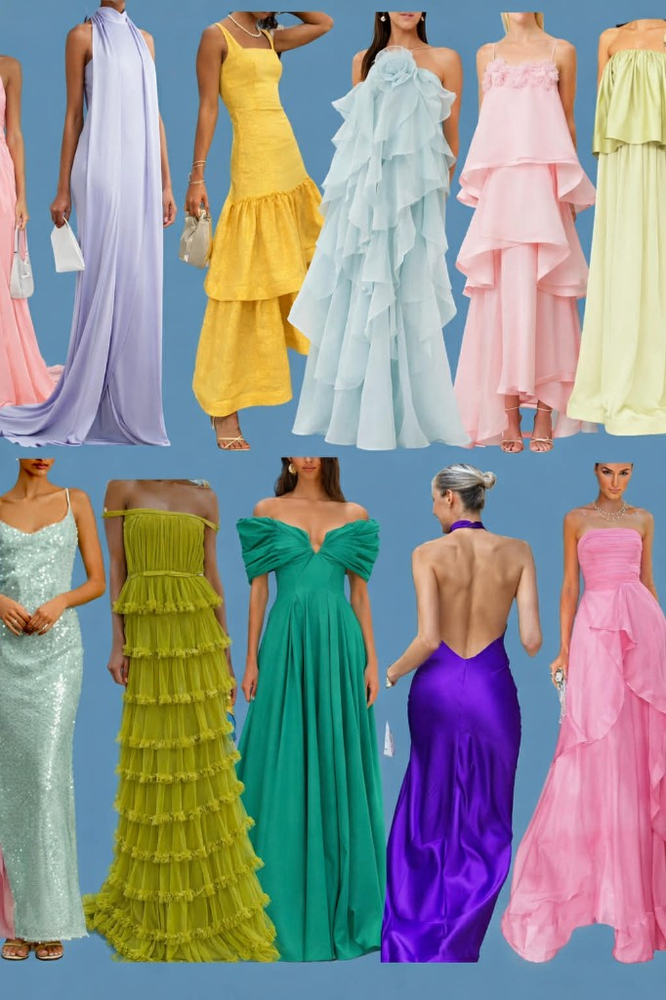
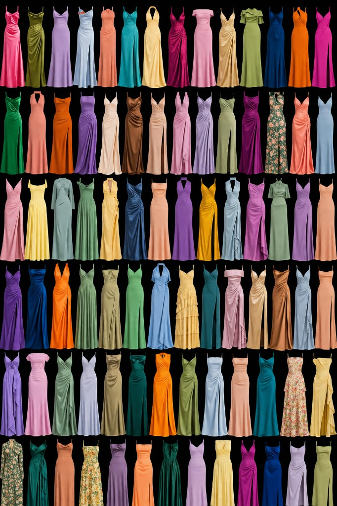
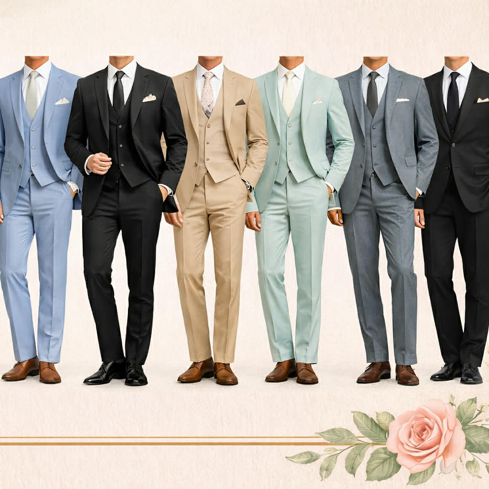
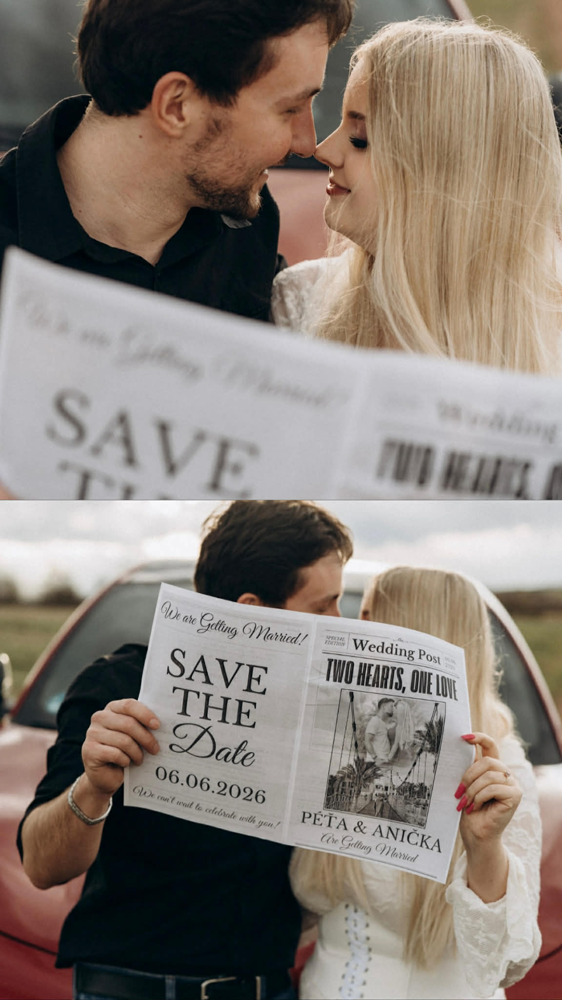

13:30
Svatební obřad
- Gratulace novomanželům
- Společné focení

Zapište si datum
06. 06. 2026
Setřete srdíčko
 6.6.2026
6.6.2026
Zámecké náměstí,
Zámecká zahrada,
Teplice
13:30
16:00
22:00 – 04:00
Bude nám potěšením, když se u kostela sv. Jana Křtitele sejdeme již ve 13:00, abychom se společně připravili na začátek obřadu. Samotný obřad začíná ve 13:30.
Doprava ke kostelu je individuální. Parkování je možné v okolí Zámeckého náměstí (ulice U Zámku, Rooseveltova a Dlouhá).
Po obřadu bude následovat společné focení a poté se přesuneme na místo hostiny, kam je pro Vás doprava zajištěna námi.
✨ Nezapomeňte se ráno pořádně nasnídat – slavnostní hostina nás čeká až kolem 16:00.
Prosíme hosty, aby během obřadu odložili mobilní telefony a užili si tento okamžik s námi.
Zvolte dlouhé šaty v různých letních barvách.
Vítané jsou světlé i tmavší tóny – důležitá je elegance a pohodlí.
Splývavé materiály, volány či jemné detaily celkový vzhled krásně doplní.
Prosíme, vyhněte se bílé a červené barvě šatů.


Zvolte oblek v klasických barvách.
Vítané jsou i barevnější varianty – důležitá je elegance a pohodlí.
Kravata, motýlek nebo další doplňky mohou outfit jemně doladit.

Největším darem pro nás bude, když tento den strávíte s námi a užijete si ho.
Pokud byste nám chtěli něco darovat, budeme rádi za finanční příspěvek na naše první společné bydlení.
